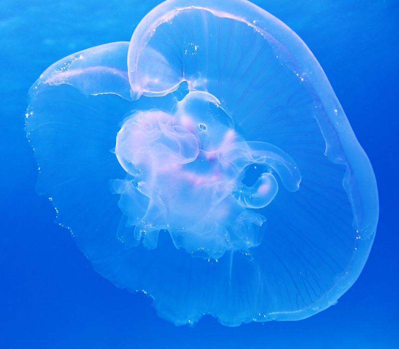
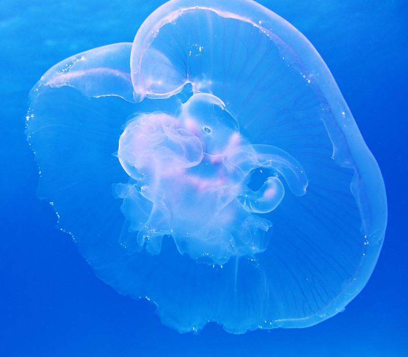

Sharks
What are they?
Sharks are ancient predators of the sea, around during the time of the dinosaurs and even earlier. They now make up the bottoms and tops of many ocean food chains, keeping balance to the seas.
What is wrong?
Many sharks have been being killed off for a variety of reasons. In many cultures, people value shark fins for making soups out of, which has caused certain species to be hunted to extinction. Some sharks have been killed out of fear due to movies like Jaws. One of the top killers of sharks though, is By-catch. Many sharks are caught by accident from fishers using trawling. This scoops up as many possible animals, and sharks tend to be unfortunate catches along with fish. By the time the fishermen realise what they have caught, it is too late to save the shark as it it has died from not enough air.
What Can We do?
While there is a lot we can do, the damage to these creatures is severe. It is going to take generations to repair the harm that has been done, and the species that are already extinct cannot come back. We can however, look at what is still around and do our best to try to protect what little environment these ancient predators have left, so that we can protect the food chains they regulate.

Sea Turtles
What are they?
Another creature of another time, sea turtles have been gracefully gliding around the oceans for millions of years. They feed on a variety of foods and keep the deep seas in check. They also are known for when the go onto land to lay their eggs.
What is wrong?
The poor sea turtle has taken a heavy hit from coastal cities. The lights and large amounts of people make it hard to new baby sea turtles to find their ways to the oceans and often die on the beaches before they can make it to the safety of the water. Teams have been recruited in many sea turtle egg-laying grounds to help, but these creatures are dying in large rates to By-catch.
What Can We do?
One of the best ways to help sea turtles to look at where your seafood comes from. By purchasing from regions of the world that have strict laws on how to handle sea turtles and that require turtle escapes on the trawling nets, you can significantly reduce the impact your food makes on the sea turtle populations.
Plankton
What are they?
Plankton are just about some of the oldest multi-cellular lifeforms on planet earth. In fact, phytoplankton produce most of the world's oxygen, not trees. The life in every ocean at both poles in the world, all natural sources of flowing water, and are extremely durable. They also make up the backbone of every single food chain in the ocean.
What is wrong?
As we continue to burn fossil fuels, we are changing the ph levels of our oceans. Even slight changes can have devastating effects on the plankton in the area. A loss in plankton life can lead to an entire ecosystem collapse if not maintained.
What is next?
One of the best way you can help plankton is by:
- helping other sea creatures
- This includes any creature on this page/website
- reading more from research institutes
- going to the actions page and learning more
Coral
What are they?
Coral is actually not a plant, but an animal! These are some of the most colourful and bright creatures known to the ocean, with some of the most famous places in the world such as the Great Barrier Reef being home to millions of different kinds of corals. These creatures build their magnificent exoskeletons out of calcium and other minerals simply floating through the water.
What is wrong?
Coral is dying to a lack of sea minerals that they desperately need. This lack of minerals is being caused by ocean acidification, which takes away compounds such are carbonate and calcium during the breakdown of CO2. This cause cause whole reefs to die, killing all the fish and animals that depend on the coral for food, shelter, and protection.
How does coral regrow?
Coral can regrow if we slow the rate at which we depend on fossil fuels. This would allow for oceans to catch up with the atmosphere and for corals to begin to regrow.
Sea Birds
Which birds?
One of the most notable birds being affected is the albatross. These huge birds can travel for weeks without ever landing, constantly flying across the massive pacific ocean. They will catch fish from the surface of the water while flying and eat it without landing.
Why does this matter?
These birds are top of the line predators, keeping fish population in many parts of the world in check. They are dying a lot of biological buildup of toxins in their bodies. Some of these toxins include plastic, which are consumed from the fish originally. When the fish eats the plastic bits, it can't digest them, so it gets stuck in the fish's body. The bird then eats the fish, so the plastic gets stuck in its body. The bird will continue to eat lots of fish until there is so much plastic that has built up that the bird dies of poisoning its own body.
How does this affect me?
Without these birds regulating many ocean going systems, many of the fish we enjoy to eat will have unstable populations. The food chains will collapse and then we are stuck without food to eat ourselves.